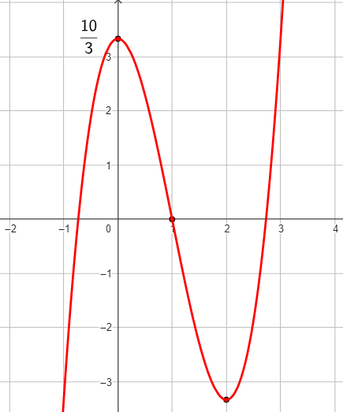

Compiti per casa
Esercizio 1
Si consideri la funzione
\[
g(x) = \int_{1}^{x} \, f(t) \, dt
\]
Determinare l'espressione analitica di \(g\) sapendo che essa è un polinomio
di terzo grado e che il suo grafico è quello riportato in figura.

Esercizio 2
Svolgere nuovamente gli esercizi della scheda disponibile
QUI